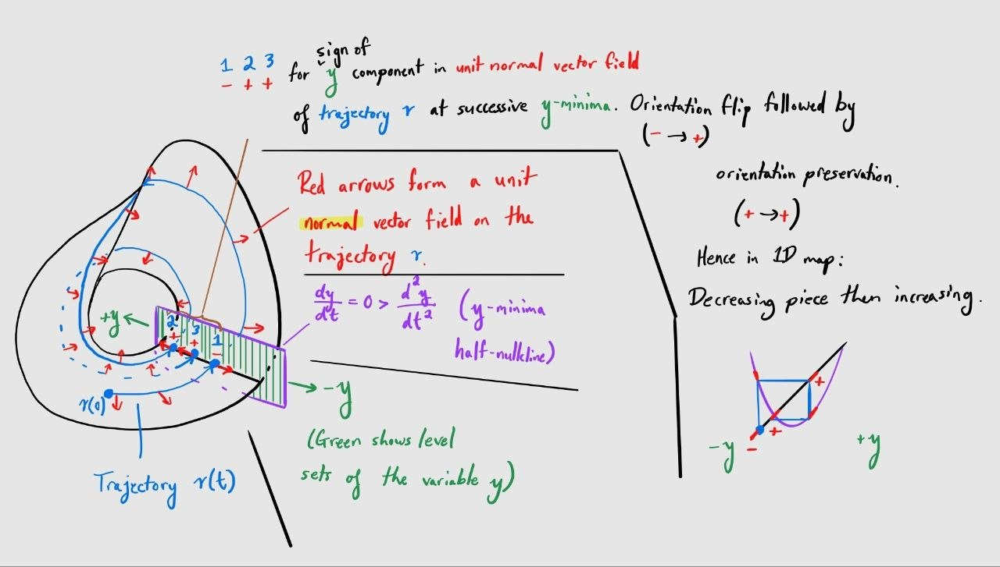
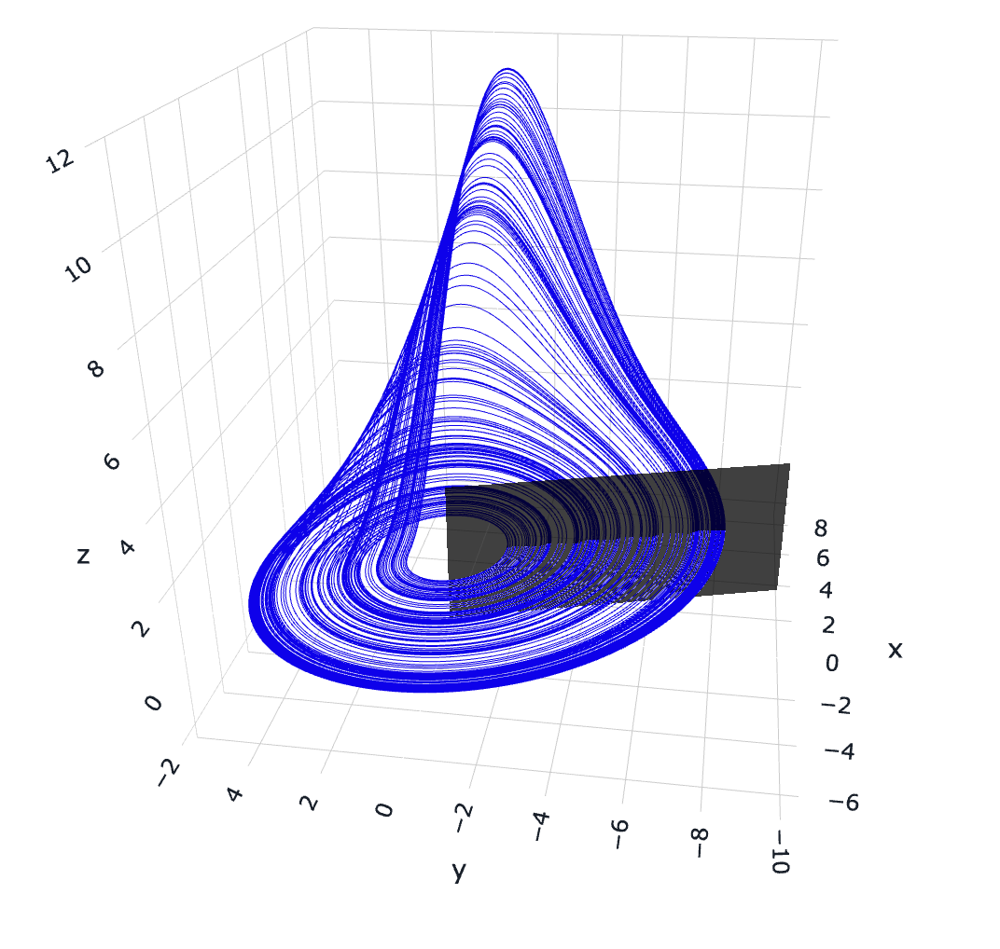
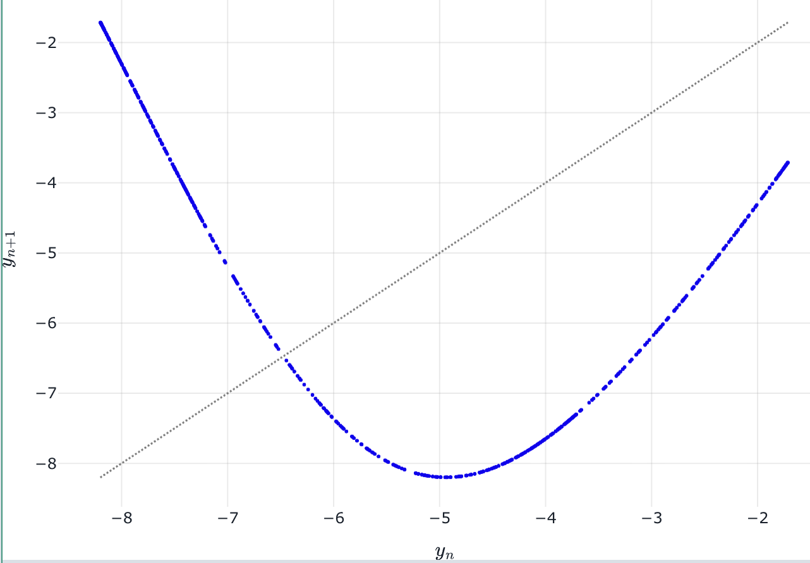
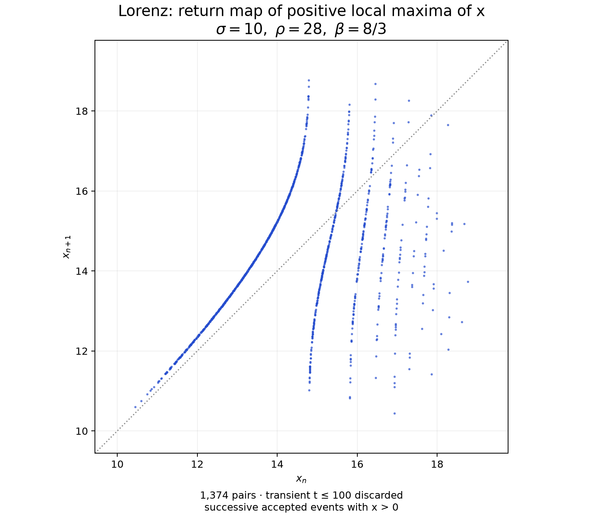
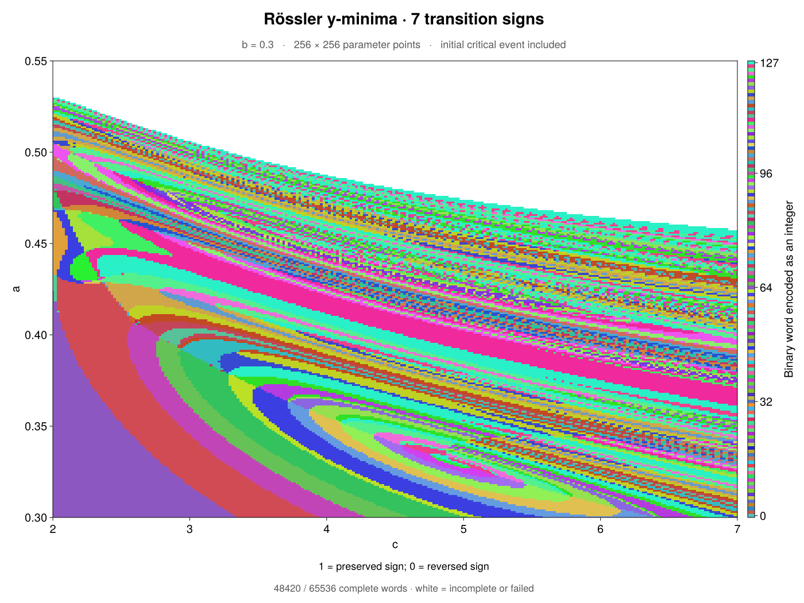

Flow kneading
Kneading.jl is capable not only of calculating kneading invariants and producing kneading diagrams for true one-dimensional maps, but it can also produce kneading diagrams for flows in systems of ordinary differential equations with chaotic attractors of fractal dimension close to two. This technique is closely related to the methods described by Barrio, Shilnikov, and Shilnikov (2012) and Malykh et al. (2020), but has been modified to accommodate ODE systems exhibiting approximately one-dimensional return maps resembling multimodal maps.
The method used by Kneading.jl is described in a forthcoming paper by this repository's developer. The presentation slides from a talk on the method given at the 2026 International Workshop on Dynamical Systems can be found at this Google Drive link.
The updated flow-kneading method used by Kneading.jl is inspired by the idea that decreasing portions of the one-dimensional return map of a chaotic attractor in a flow correspond to an odd number of half-twists and the increasing portions to an even number in the corresponding topological template, and hence (informally speaking, to paint a mental picture only) a smooth unit vector field in the unstable real line bundle over the template will "flip direction" when the return of an orbit lands in a decreasing portion and will "maintain direction" when the return lands in an increasing portion. There is probably a much better way to convey this idea, but without some pictures it is difficult to explain.
The flow-kneading functionality in Kneading.jl comprises the following features:
- Integration of flow-normal tangent vectors, meant to track the unstable direction "along" the attractor that is orthogonal to the flow.
- Orbit and flow-normal tangent vector initialization routines
- Newton iteration and leading-stable-direction initialization for flow-normal tangent vectors at a real hyperbolic saddle equilibrium with a single positive characteristic eigenvalue
- Initialization and continuation of smooth Rössler-like critical points by anchoring to a saddle-focus equilibrium with two-dimensional spiral unstable manifold
For a first calculation, start with the Lorenz usage example or the Rössler example. Both use an autonomous CoupledODEs system. Kneading.jl computes the derivatives automatically; the ODE rule must support ForwardDiff's numeric types, as the examples do.
Overview
Flow kneading involves studying discrete events that occur on a unit normal vector field over a trajectory curve. The library handles four stages:
- Initialization: Selecting a distinguished, or "critical", trajectory and initializing a flow-normal tangent vector at its initial condition.
- Integration: Solving the critical trajectory and transporting the flow-normal tangent vector along it.
- Event capture: Determining some condition which must be met by the critical trajectory to trigger a discrete "event", where some information will be recorded about the dynamics.
- Encoding: Recording some information about the flow-normal tangent vector at the time of a discrete event.
The sketch below hopefully gives some sense of how the overall procedure works, based on what is going on geometric when we compute flow kneading for the Rössler attractor. Hopefully staring at it for a while makes it make sense. It's not meant to be read in any particular order. If it's important to anyone, I can clean this sketch up and make it easier to understand.

Background
Take a system specified via DynamicalSystem and TangentDynamicalSystem in $\mathbb{R}^N$ for some $n \geq 3$ as a flow governed by an autonomous ODE system: $\dot{\mathbf{x}} = \mathbf{f}(\mathbf{x}), \qquad \mathbf{x} \in \mathbb{R}^N,$ $\dot{\vec{v}} = D\mathbf{f}\vec{v}, \qquad \vec{v}(t) \in T_{\mathbf{x}(t)}\mathbb{R}^N.$
The vector field $\vec{v}(t)$ is supposed to track the unstable direction along the roughly-two-dimensional attractor (orthogonal to the flow direction) at each solved point along the trajectory $\mathbf{x}(t)$.
Initialization
The initial condition is technically the tangent vector $\vec{v}(0) \in T_{\mathbf{x}(0)}\mathbb{R}^N$, but we need to keep track of $\mathbf{x}(0)$ separately since in Julia each is just a vector of floating-point numbers. Flow kneading requires a particular initial condition to be chosen; since partition points of one-dimensional return maps for flows typically correspond to some initial condition in the unstable manifold of some kind of hyperbolic saddle equilibrium, we provide two initialization methods that return $\mathbf{x}(0)$ and $\vec{v}(0)$ given an initial guess for the location of such an equilibrium in the state space $\mathbb{R}^N$:
- Real-saddle initialization:
init_real_saddlefinds the equilibrium by Newton iteration, verifies that it has one real unstable direction, launches $\mathbf{x}(0)$ along a chosen branch of that direction, and constructs $\vec{v}(0)$ from the leading (i.e., weakest) stable direction by projecting it normal to the flow and normalizing it. - Saddle-focus initialization:
init_saddle_focusselects a local seed ray from the intersection of the two-dimensional unstable spiral eigenspace with the tangent plane to a chosen extremum section. It integrates candidate seeds to successive extrema, solves for a critical point of the induced return map, and continues that point in a parameter using event-corrected sensitivities.
Integration
Any TangentDynamicalSystem-based integrator can be used. The flow-normal tangent vector $\vec{v}(t)$ is integrated according to the tangent dynamics $\dot{\vec{v}} = D\mathbf{f}(\mathbf{x}(t))\vec{v}$, but each integration step (or every few integration steps) $\vec{v}$ is projected onto the orthogonal subspace of the flow direction: $\vec{v} \leftarrow \vec{v} - \mathrm{proj}_{\mathbf{f}(\mathbf{x})} \vec{v}.$ The projected vector is then normalized: $\vec{v} \leftarrow \frac{\vec{v}}{\|\vec{v}\|}.$ If this orthogonalization step is omitted, $\vec{v}$ can pass through the flow direction and wind up pointing the other way along the attractor (switching sign) without the attractor doing a half-twist.
Event capture
Along a critical trajectory, we monitor for some event condition to be met, at which time we record some data about the flow-normal tangent vector $\vec{v}$ in order to generate a new symbol encoding the dynamical behavior of the critical trajectory. The usual event condition is a local extremum in a state variable; for instance, the Lorenz system has state $(x(t), y(t), z(t)) \in \mathbb{R}^3$ so we might monitor for local maxima in $z(t)$ using the condition $\ddot{z} < 0 = \dot{z}.$ For local minima in $x(t)$, for example, we would use the condition $\dot{x} = 0 < \ddot{x}.$
Since events are determined by zero-crossings of a test function like $\dot{x}(t)$ at successive sample times $t = t_n$ and $t_{n+1}$ (e.g., with Euler's method, $t_n$ and $t_{n+1} = t_n + \Delta t$), Kneading.jl is able to approximate the true time $\tau$ of the event by linear interpolation based on the values of $\dot{x}(t)$ at the two nearest sampled times: $\tau \approx t_n - \dot{x}(t_n)\frac{t_{n+1}-t_n}{\dot{x}(t_{n+1})-\dot{x}(t_n)}.$
This interpolation is used by the fixed-step integration = :rk4 option. The default adaptive solver instead locates each zero using continuous interpolation and root finding. Use LocalMaximum(i) or LocalMinimum(i) to select the event, where i is the state-variable index.
Encoding
At each captured event (say, at time $t = t_n$), we have access to two data: $\mathbf{x}(t_n) \in \mathbb{R}^N$ and $\vec{v}(t_n) \in T_{\mathbf{x}(t_n)}\mathbb{R}^N$. If the event condition is a local extremum in the state variable $z$, then we can record the sign of the $z$ component of the vector $\vec{v}(t_n)$: $s_n = \mathrm{sign} \left\langle \frac{\partial}{\partial z}, \vec{v}(t_n) \right\rangle.$ Then we obtain a sequence $(s_1, s_2, s_3, \ldots)$ of symbols $\pm 1$, in some sense telling us about the unstable direction $\vec{v}(t)$ along the trajectory $\mathbf{x}(t)$. Detecting changes in this symbolic sequence as the system parameters are varied produces a kneading diagram.
It is not strictly necessary to use the same state variable for the event condition and for the flow-normal tangent vector component used to produce the symbolic sequence. You can use any variable's extrema for the event condition and simultaneously use any component's sign for the flow-normal tangent vector to obtain symbols.
Usage example
This example follows a critical trajectory of the Lorenz system, captures local maxima of $z$, and records the sign of the transported tangent's $z$ component at each maximum.
using DynamicalSystemsBase
using Kneading
function lorenz_rule!(du, u, p, t)
x, y, z = u
σ, ρ, β = p
du[1] = σ * (y - x)
du[2] = x * (ρ - z) - y
du[3] = x * y - β * z
return nothing
end
parameters = [10.0, 28.0, 8 / 3]
equilibrium_guess = [0.0, 0.0, 0.0]
lorenz = CoupledODEs(lorenz_rule!, equilibrium_guess, parameters)
initializer = RealSaddleInitializer(
equilibrium_guess = equilibrium_guess,
launch_distance = 1e-6,
unstable_branch = 1,
)
z_index = 3
problem = FlowKneadingProblem(
lorenz;
initializer = initializer,
capture = LocalMaximum(z_index),
observable = CoordinateComponent(z_index),
word_length = 16,
maximum_time = 1_000.0,
)
result = flow_kneading(problem)
lap_orientations = result.transition_wordThe initializer displaces the orbit from the equilibrium before integration; starting exactly at the equilibrium would leave it stationary. The returned word describes orientation between successive events: if the sampled component signs are $s_n$, then $m_n=s_n s_{n+1}$ is $+1$ for preservation and $-1$ for reversal. Thus 16 transition symbols require 17 captured signs. These are the symbols to compare when tracing contours; raw component signs accumulate earlier reversals.
Reading the result
Check result.complete before using a word as a full-length diagram value.
| Field | Meaning |
|---|---|
raw_word | Tangent-component signs, each -1 or +1. |
transition_word | Adjacent sign products: +1 preserves orientation; -1 reverses it. |
transition_code | The transition word encoded in binary, with +1 as one. |
events | Event times, states, unit tangents, and measured components. |
return_times | Time intervals between recorded events. |
initialization | The initial state, tangent, and any saddle-focus anchor details. |
status | :complete or the reason the requested word was not completed. |
For example, inspect event coordinates and intervals with:
maxima = [event.state[z_index] for event in result.events]
return_times = result.return_times
@show result.complete result.status result.transition_wordAn incomplete result retains its valid word prefix but sets both integer codes to -1; missing symbols are never padded. :maximum_time means the time limit was reached, not that a return cannot occur. :ambiguous_sign means a sampled component was within the sign tolerance of zero. :state_limit, :numerical_failure, and :integration_failure report other reasons for stopping; result.metadata.detail provides additional details when available.
By default, no accepted events are discarded. Set transient_events only when intentionally omitting the beginning of the critical orbit. For saddle-focus initialization, the returned critical point is itself included as the first event. Reversing the initial tangent reverses every raw sign but leaves the transition word unchanged.
Interpreting contours
The easiest way to understand the contours of a kneading diagram is to imagine a one-dimensional return map constructed from local extrema in a state variable. As a simple case study, we may examine the Rössler system studied by Malykh et al. (2020), written in the form
\[\begin{aligned} \dot{x} &= -y-z,\\ \dot{y} &= x+ay,\\ \dot{z} &= 0.3x+z(x-c), \end{aligned}\]
with an equilibrium at the origin and parameters $a, c > 0$. At the parameter values $a=0.3$ and $c=5.5$, the system has a spiral chaotic attractor with fractal dimension slightly above 2:

Depicted in black is a portion of the Poincaré surface of section constructed from the local minimum condition in the $y$-variable: $\dot{y} = 0 < \ddot{y}.$ Plotting the approximately one-dimensional $y$-value return map for these $y$-minima (intersections with the black surface) yields the following picture:

This graph resembles that of a well-defined function such as a quadratic polynomial map. Observe that the domain of the graph can be partitioned into a left part, on which the values appear to be decreasing, and a right part, on which the values appear to increase. If a trajectory of the flow system traverses the part of the attractor that simply revolves like an annulus near $z=0$ about the origin, then the corresponding trajectory of the return map will contain an associated point in the increasing part at right; if the flow trajectory traverses the part of the attractor that makes an upward excursion to large $z$ value and performs a half-twist with each revolution about the origin in the $(x, y)$-plane, then the corresponding return-map trajectory will contain an associated point in the decreasing part at left. This half-twist results in the flow-normal tangent vector's $y$ component flipping sign on the corresponding return, matching the orientation reversal expected from the return map due to the fact that the return map is decreasing on the associated part of the domain. If the annular part of the attractor is traversed, no flip occurs, and so the flow-normal tangent vector retains the sign of its $y$ component upon the return, matching the increasing behavior of the return map on the associated part of the domain.
False positives
A change in the recorded word need not mark a bifurcation of the flow. The chosen event section or scalar coordinate can become degenerate as parameters vary, producing contours even when the underlying dynamics vary smoothly. The comparisons below use lap-orientation symbols $m_n=s_n s_{n+1}$, rather than the raw tangent-component signs $s_n$.
Nullcline tangency
An orbit can become tangent to the nullcline at the boundary of the chosen extremum section and gain or lose a captured event. For extrema of a variable $y$, the degenerate event satisfies $\dot{y}=\ddot{y}=0$: a maximum and a minimum can appear or disappear together, changing the number of events recorded when only one kind is captured. Subsequent event indices shift, creating an apparent symbolic contour without requiring a bifurcation of the flow.
The presentation proposes checking whether the words on either side agree after deleting one extra symbol, for example $(+,+,-,-,\ldots)$ and $(+,-,-,\ldots)$. Compare the corresponding event times as well; an interval spanning a removed event should be compared with the sum of the two intervals it previously separated. This is a diagnostic for an isolated tangency, not a guarantee that every such word match is spurious.
Coordinate singularity
The scalar used to encode orientation can fail as a coordinate along the section. For an observable $q$, this occurs when $\langle\nabla q,\vec{v}\rangle=0$: the transported unstable direction is tangent to a level set of $q$. Its measured sign can then reverse without a change in the underlying folding of the flow. The projected return map may develop a multivalued region because distinct section points share the same coordinate value.
If only one sampled sign $s_n$ changes, both adjacent transition symbols $m_{n-1}$ and $m_n$ change. This gives the presentation's proposed filter: look for otherwise matching words that differ by two consecutive sign reversals, such as $(-,-,\ldots)$ versus $(+,+,\ldots)$. The pattern alone does not establish a coordinate singularity; inspecting the projected map or repeating the measurement with a suitable alternative coordinate helps identify its geometric cause.
False negatives
Conversely, a bifurcation need not change the recorded orientation word. Orientation symbols distinguish increasing from decreasing returns, but do not distinguish every branch of a return map.
Saddle crossing
As parameters vary, the critical orbit can pass from one side of a saddle's stable manifold to the other. At a hyperbolic saddle, the return time tends to infinity as the incoming orbit approaches the saddle's stable manifold. An orbit on that manifold approaches the equilibrium asymptotically and does not complete the return. The return map can therefore have a jump discontinuity across this boundary. If the branches on either side have the same orientation, crossing this discontinuity need not change the corresponding symbol. The orientation word can therefore miss a saddle connection, including a homoclinic connection when the returning orbit belongs to that saddle's unstable manifold.
Such a crossing may alter later symbols, but there is no assurance that a finite word will reveal it. Return times and proximity to the saddle provide additional diagnostics; locating and continuing the saddle connection requires information beyond orientation alone. The presentation raises using the associated saddles to expose these hidden contours, without specifying a general detection algorithm.
For Lorenz, we can instead capture positive local maxima of $x$, where $\dot{x}=0$, $\ddot{x}<0$, and $x>0$. The following example uses the lorenz system and initializer defined above:
x_index = 1
problem = FlowKneadingProblem(
lorenz;
initializer = initializer,
capture = LocalMaximum(x_index; accept = (u, p, t) -> u[x_index] > 0),
observable = CoordinateComponent(x_index),
transient_events = 0,
word_length = 16,
maximum_time = 1_000.0,
)
result = flow_kneading(problem)
lap_orientations = result.transition_wordThe accept predicate restricts captured events to $x>0$. To inspect the corresponding return map, record $x_n=x(t_n)$ at successive accepted maxima and plot $(x_n,x_{n+1})$; the return times are $t_{n+1}-t_n$. Negative maxima are skipped before pairing events: each positive maximum is paired with the next positive maximum, even if the orbit visits the negative lobe in between. This differs from taking maxima of $|x|$. The integration time limit bounds computation; it does not make a return through the saddle finite.

The numerical plot contains 1,374 successive pairs from an orbit starting at $(1,1,1)$, integrated to $t=2000$ with the transient $t\leq100$ discarded. This attractor sample illustrates the return map, rather than the saddle-seeded critical orbit in the example. The sampled branches appear increasing on both sides of several jumps, illustrating why orientation alone does not distinguish all return branches.
Saddle-focus initialization
A saddle-focus equilibrium with a two-dimensional unstable spiral manifold is often found nearby a chaotic attractor having reduction to a one-dimensional return map (e.g., in the Rössler system). A small neighborhood of such a saddle-focus, intersected with that unstable manifold, often contains initial conditions of trajectories which travel to smooth critical points of the return map once they enter the chaotic attractor. The half-nullcline associated with captured variable-extremum events on system trajectories generically intersects this unstable manifold in a curve locally which is well approximated by a ray emerging from the saddle-focus. This fact, along with the fact that a Newton corrector can easily track the movement of the saddle-focus as parameters are varied, permits us to track these smooth critical points in parameter continuation while mitigating attractor drift along stable directions in the full Poincaré section (which are eliminated in the projection to a one-dimensional return map) and giving enough time for the unit flow-normal tangent vector to relax to the unstable direction.
The construction below returns the selected critical point in full state space and a unit flow-normal tangent vector there, ready to begin kneading. This is despite the critical point being anchored to an initial condition closer to the saddle-focus, which may not even be near the attractor.
The result also retains the anchor details and convergence diagnostics so the same critical-point branch can be continued at nearby parameter values.
Constructing the seed family
Let $u_{\mathrm{eq}}$ be the equilibrium and let $\lambda\pm i\omega$, with $\lambda>0$, be its unstable eigenpair. The real and imaginary parts of an eigenvector span the unstable plane $E^u_{u_{\rm eq}}$. For extrema of a variable $y$, write $h(u)=f^y(u)$. The tangent line to the intersection curve described above is
\[L=E^u_{u_{\rm eq}}\cap\ker Dh(u_{\mathrm{eq}}).\]
Choose the unit direction $e$ on this line pointing into the selected half-nullcline. With $J=Df(u_{\mathrm{eq}})$, the linearized test is $Dh(u_{\mathrm{eq}})Je>0$ for minima and $<0$ for maxima. Let $\rho$ be the logarithm of the positive launch radius, so the distance from the equilibrium is $r=\exp(\rho)$. The seed family is
\[p(\rho)=u_{\mathrm{eq}}+\exp(\rho)e.\]
The ray approximates the intersection curve; a finite-radius seed need not lie exactly on either the manifold or the half-nullcline. Check that the radius is small enough by repeating the calculation with a smaller launch radius and one additional captured event before the candidate critical point. The resulting critical-point location and unit tangent should change by less than the chosen tolerances. This refinement procedure is detailed below in Refining the event index.
Locating the critical point and tangent
init_saddle_focus performs the following calculation. You supply the equilibrium guess and event type; the initializer varies $\rho$, locates the return-map turning point, and constructs its flow-normal tangent.
1. Integrate the seed and its sensitivity. Let $u(t;\rho)$ be the trajectory starting from $p(\rho)$. Its sensitivity $v(t;\rho)=\partial u(t;\rho)/\partial\rho$ measures how its state changes when the launch coordinate $\rho$ changes, at fixed elapsed time $t$ and fixed system parameters. Thus a small change $\delta\rho$ in the launch coordinate changes the state by approximately $v(t;\rho)\,\delta\rho$.
Integrate the trajectory together with $\dot v=Df(u)v$, starting from
\[v(0)=\partial_\rho p=\exp(\rho)e.\]
Write $q_k(\rho)$ for the $k$th accepted extremum and $Y_k(\rho)=y(q_k(\rho))$ for its return-map coordinate.
2. Locate the turning point. Choose an event index $M$ and solve
\[g_M(\rho)=\frac{\partial_\rho Y_{M+1}}{\partial_\rho Y_M}=0, \qquad \partial_\rho Y_M\ne0.\]
This is the slope of $Y_M\mapsto Y_{M+1}$ along the transported seed family. At the first parameter value, choose a root matching the desired critical point in a sampled return map. Different roots can represent different points.
The initializer uses forward sensitivities for evaluating $g_M$ and a choice of method for the Newton slope $g_M'(\rho)$:
newton_derivative = :finite_difference: use central differences of $g_M$.newton_derivative = :second_order_sensitivity: use second-order trajectory sensitivities, including second-order event-time corrections.
Both options use capped Newton corrections. If nearby guesses fail, scan $\rho$, bisect sign-changing intervals on a continuous, valid event branch, and Newton-correct the selected candidate.
To evaluate the derivatives, account for the change in event time with $\rho$. The tangent to the section hits is
\[w_k=\frac{dq_k}{d\rho} =v_k-\frac{Dh(q_k)v_k}{Dh(q_k)f(q_k)}f(q_k).\]
Read $\partial_\rho Y_k=(w_k)^y$. At a $y$-extremum, $f^y(q_k)=0$, so this correction leaves the $y$ component unchanged. The other components can change: $w_k$ describes how the entire event location $q_k$ moves along the section as $\rho$ varies, whereas $v_k$ compares trajectories at the same elapsed time.
3. Project and normalize the tangent. At the selected root, set $u_0=q_M$ and compute
\[\widetilde v_0=w_M-\frac{\langle w_M,f(u_0)\rangle} {\|f(u_0)\|^2}f(u_0), \qquad v_0=\frac{\widetilde v_0}{\|\widetilde v_0\|}.\]
Store the critical state as u0 and $v_0$ as the one-column matrix Q0. The zero slope concerns the next return's scalar derivative, not the full tangent: the tangent need not vanish at the critical point.
Returned initialization data
Pass the returned SaddleFocusSeed as initializer to a FlowKneadingProblem. Its fields also let you inspect the calculation:
| Fields | Contents |
|---|---|
u0, Q0 | Critical-point approximation and unit flow-normal tangent. |
equilibrium, seed_direction, rho | Corrected saddle-focus and final launch ray coordinate. |
event_index | Accepted $M$: the event count from the launch point to u0. |
parameters, capture, critical_kind | System parameter values used for this initialization, capture-event definition, and return-map extremum type. |
diagnostics | Criticality residual, state/tangent refinement errors, and event-transversality and coordinate-derivative checks. |
The launch point $p(\rho)$ can be reconstructed by equilibrium + exp(rho) * seed_direction. The result stores an independent copy of the system parameter values, so later parameter changes do not alter this record.
Refining the event index
The index $M$ counts accepted extrema from the seed to the critical point. Accuracy of a seed is checked by repeating the solve with a smaller seed requiring one additional return. This check runs automatically with the default refine = true.
Predict and correct. Use the linearized spiral to predict
\[M_{\mathrm{new}}=M+1, \qquad \rho_{\mathrm{guess}}=\rho-\frac{2\pi\lambda}{|\omega|}.\]
then iteratively (Newton) solve $g_{M+1}(\rho)=0$ directly from that guess. No separate nonlinear preimage solve is needed. The solution should reach the same physical critical point after one extra revolution near the saddle-focus.
Compare the two solutions. Accept convergence only when:
- The full critical states agree within the state tolerance.
- The unit flow-normal tangents, with consistent orientation, agree within the tangent tolerance.
- The criticality residual meets its tolerance.
- The event-transversality factors and $\partial_\rho Y_M$ remain safely nonzero.
Repeat or stop. If the comparisons fail, increase $M$ and repeat while checking that the critical-point branch is unchanged. Report failure if convergence stalls, the seed becomes too small to resolve, or an event becomes tangent.
On success, the initializer returns the smaller-$M$ solution validated by the comparison; diagnostics.refinement_event_index records the extra event used to check it. Increase maximum_event_index if the allowed refinement depth is insufficient. With refine = false, the root is solved at the requested $M$, but the seed approximation is not checked; diagnostics.refinement_checked and diagnostics.converged are then false.
Continuing in parameters
The anchoring saddle-equilibrium, ray direction $e$, and seed coordinate $\rho$ should only move a small amount with a typical small change in system parameters.
- Update the equilibrium. Newton-correct from the previous
equilibrium, then recompute the unstable eigenspace and seed direction. - Update the critical point. Start from the previous $\rho$ and Newton-correct $g_M(\rho)=0$, initially reusing the previous
event_index. - Check the branch and accuracy. Use the previous
u0andQ0to check branch and tangent-orientation consistency. Keep the extremum type fixed and apply the refinement tests above. - Save the result. Retain the updated anchor, critical state, tangent, and diagnostics for each accepted parameter value.
The equilibrium and critical-point solves are separate corrections. Each candidate stays tied to the updated seed family; its coordinates are not freely adjusted in the full Poincaré section.
Pass previous = initialization to reuse the anchor. A branch-distance guard rejects candidates too far from the preceding critical point; branch_tolerance controls this normalized distance. It is a practical guard, not a proof of branch identity. If correction fails, retry with a smaller parameter step. Refinement increases $M$ automatically when needed; you can occasionally try a smaller initial_event_index to reduce cost. Solver settings and tolerances are inherited from the previous result; explicit keyword arguments override them.
Rössler example
This example locates the minimum of the $y$-minima return map for the origin-fixed Rössler system. The initial radius and event index are starting guesses; refinement determines whether they are sufficient.
using DynamicalSystemsBase
using Kneading
function rossler_rule!(du, u, p, t)
x, y, z = u
a, c = p
du[1] = -y - z
du[2] = x + a * y
du[3] = 0.3 * x + z * (x - c)
return nothing
end
rossler = CoupledODEs(rossler_rule!, zeros(3), [0.3, 5.5])
y_minimum = LocalMinimum(2)
initialization = init_saddle_focus(
rossler;
equilibrium_guess = zeros(3),
capture = y_minimum,
critical_kind = :minimum,
initial_event_index = 4,
state_tolerance = 1e-6,
tangent_tolerance = 1e-6,
)
result = flow_kneading(FlowKneadingProblem(
rossler;
initializer = initialization,
capture = y_minimum,
word_length = 7,
))
@show initialization.u0 initialization.diagnostics.converged
@show result.complete result.transition_wordSet newton_derivative = :second_order_sensitivity to obtain $g_M'(\rho)$ from second-order sensitivities instead of the default central differences. Both settings use forward sensitivities for $g_M$ itself. The finite-difference method requires only first-order trajectory sensitivities; the second-order method also integrates second-order sensitivities and corrects for event-time changes.
The tolerances serve different purposes:
state_tolerance: agreement of the full critical-point locations under refinement.tangent_tolerance: agreement of the oriented unit tangents under refinement.criticality_tolerance: the allowed residual in $g_M(\rho)=0$.abstolandreltol: numerical integration accuracy, separate from seed-refinement accuracy.
Event capture and symbolic encoding begin at the returned critical point, not at the launch point reconstructed for inspection.
At an exact smooth critical return, $\partial_\rho Y_{M+1}=0$, so the tangent component used for that event's sign is zero. A finite numerical approximation can assign either sign. Strong contraction followed by normalization can conceal this sensitivity, even when the recorded unit-tangent component is large. Compare words across tighter root and integration tolerances; a small criticality residual alone does not certify the orientation word. The exact zero has no $\pm1$ sign, so transitions involving that event are not defined by this sign rule.
To continue the critical point to nearby parameters:
next_rossler = CoupledODEs(rossler_rule!, zeros(3), [0.301, 5.5])
next_initialization = init_saddle_focus(next_rossler; previous = initialization)Use the new initialization with next_rossler; reusing a seed whose stored parameters differ from the system is rejected. Initialization failures raise SaddleFocusInitializationError with the failed stage and diagnostics. For a return map with several critical points, supply critical_target as an approximate full state or return-coordinate value to choose one.
Computing a Rössler kneading diagram
Use SaddleFocusInitializer to configure initialization across a parameter plane. The system builder receives the horizontal and vertical parameter values and must return a fresh system at each point:
using Kneading.Diagrams: ParameterPlane
plane = ParameterPlane(
range(2.0, 7.0; length = 64),
range(0.30, 0.55; length = 64);
xname = "c", yname = "a",
)
initializer = SaddleFocusInitializer(
equilibrium_guess = zeros(3),
critical_kind = :minimum,
)
diagram = scan_flow_kneading(
(c, a) -> CoupledODEs(rossler_rule!, zeros(3), [a, c]),
plane;
initializer = initializer,
capture = LocalMinimum(2),
word_length = 7,
maximum_time = 2_000.0,
max_state = 1e6,
)
write_flow_scan("output/rossler-flow-kneading.tsv", diagram)The first row continues serially to establish anchors; subsequent columns continue independently and run in parallel when Julia has multiple threads. The system builder and any custom event or observable callbacks must not mutate shared state. Arrays are indexed as [a_index, c_index]. diagram.transition_codes contains the seven-symbol colors; diagram.statuses and diagram.errors record incomplete calculations and initialization failures. A -1 code must be masked, not interpreted as another kneading word. Use store_results = true to retain every point's full events and initialization.
Running and plotting the diagram
The repository's examples/rossler_kneading_diagram.jl is a complete end-user script for a $256\times256$ Rössler parameter plane. It calls only the public API. Run it from the repository root:
julia --project=. --threads=auto examples/rossler_kneading_diagram.jl
julia --project=examples examples/plot_rossler_kneading.jl output/rossler-flow-kneading.tsvInstall the optional plotting dependencies first with julia --project=examples -e 'using Pkg; Pkg.instantiate()'. For a quick trial, set the environment variable ROSSLER_RESOLUTION=32; ROSSLER_OUTPUT selects the output TSV path.
The script fixes $M=4$ (refine = false) and uses RK4 with dt = 0.05. It includes the critical point's sign and seven subsequent $y$-minimum signs, without a transient. These settings differ from the default adaptive integration and disable seed-refinement checks. Check that contours are stable under tighter integration settings, seed refinement, and longer words.

Public API
Flow-kneading API
Kneading.FlowKneading.LocalMaximum — Type
LocalMaximum(index; accept=(u, p, t) -> true)Capture strict local maxima of state coordinate index. The optional predicate filters events before consecutive returns are paired.
Kneading.FlowKneading.LocalMinimum — Type
LocalMinimum(index; accept=(u, p, t) -> true)Capture strict local minima of state coordinate index. The optional predicate filters events before consecutive returns are paired.
Kneading.FlowKneading.CoordinateComponent — Type
CoordinateComponent(index)Encode the sign of coordinate index of the unit flow-normal tangent.
Kneading.FlowKneading.RealSaddleInitializer — Type
RealSaddleInitializer(; equilibrium_guess, launch_distance=1e-6, kwargs...)Configure initialization from a real saddle with one unstable direction and a real, simple leading stable direction. The unstable branch is 1 or -1. Explicit unstable_reference and stable_reference vectors fix orientation; their defaults are all-ones vectors. Spectral or orientation failures are errors.
Kneading.FlowKneading.SaddleFocusInitializer — Type
SaddleFocusInitializer(; kwargs...)Configure saddle-focus critical-point initialization for a flow-kneading scan. Keywords are passed to init_saddle_focus.
Kneading.FlowKneading.SaddleFocusSeed — Type
The critical state u0, unit flow-normal tangent Q0, launch anchor, and diagnostics returned by init_saddle_focus. Parameter values are copied so changing the source system does not change the recorded initialization.
Kneading.FlowKneading.SaddleFocusInitializationError — Type
An initialization failure with its stage and numerical diagnostics.
Kneading.FlowKneading.init_saddle_focus — Function
init_saddle_focus(system; equilibrium_guess, capture=LocalMinimum(2), kwargs...)Find a critical point of an extremum return map using the unstable spiral at a saddle-focus. Return its full state u0, one-column unit flow-normal tangent Q0, and launch data in a SaddleFocusSeed.
critical_kind is :minimum or :maximum of the return map, independently of the captured extremum type. initial_radius and initial_event_index supply the first root guess. If correction fails, scan rho_range for candidate roots. Use critical_target to select a particular critical state or return coordinate. When a target or previous result is supplied, require its distance from the corrected state, divided by max(1, norm(target)), to be at most branch_tolerance=0.25. This is a heuristic guard against branch jumps, not a proof of branch identity. Reduce the parameter step if it rejects a correction.
newton_derivative=:finite_difference uses central differences for the Newton slope; :second_order_sensitivity integrates second-order sensitivities and corrects both orders for event time. Both integrate first-order sensitivities for the return-map slope itself.
By default, check each candidate against a smaller launch radius and an extra event. Retain the smaller event index when the critical state and oriented tangent agree within state_tolerance and tangent_tolerance; otherwise advance to the finer candidate and repeat. refine=false performs an unchecked fixed-index initialization. Pass previous=seed after changing parameters to continue the same critical-point branch. Solver settings and refinement mode are inherited from previous unless explicitly overridden. The vector field must be autonomous and support ForwardDiff for second-order sensitivities.
Control ODE accuracy with abstol, reltol, and dtmax. The root solver uses finite_difference_step, max_newton_step, and max_newton_iterations; rho_range and rho_samples control its fallback search. event_tolerance guards event transversality and denominator_tolerance guards the coordinate derivative and projected tangent. The equilibrium corrector uses equilibrium_tolerance and max_equilibrium_iterations.
max_time, max_state, minimum_radius, and maximum_event_index bound the search. An unsuccessful root solve or refinement throws SaddleFocusInitializationError, carrying a failure stage and numerical diagnostics. Inspect seed.diagnostics for the accepted residual, refinement errors, derivative method, and target distance.
Kneading.FlowKneading.FlowKneadingProblem — Type
FlowKneadingProblem(system; initializer, capture, word_length=16, kwargs...)Capture extrema and signs of a unit flow-normal tangent. word_length is the requested number of adjacent-sign transitions, requiring one additional raw sign. observable=CoordinateComponent(capture.index) selects the component; a function (u, p, t) -> direction can instead supply an observable vector.
The initializer can be RealSaddleInitializer, SaddleFocusInitializer, a returned seed, or (u0=state, Q0=reshape(tangent, :, 1)). With include_initial_event=:auto, saddle-focus seeds include the critical-point event at time zero. Explicit true requires an accepted extremum at the seed. transient_events skips accepted events before encoding.
Adaptive Tsit5 integration projects the tangent after every accepted step and at captured events. integration=:rk4 selects fixed-step RK4 with linearly interpolated events, provided for reproducing fixed-step scans; set dt explicitly for those scans and check results under step refinement.
maximum_time bounds elapsed integration time. A missing or ambiguous symbol produces an incomplete result, not a padded word. No user system is advanced.
Kneading.FlowKneading.FlowKneadingEvent — Type
A captured extremum with elapsed time, full state, unit flow-normal tangent, captured coordinate value, event rate, observable component, and its sign. A zero sign denotes an unresolved component.
Kneading.FlowKneading.FlowKneadingResult — Type
Result of flow_kneading. raw_word holds component signs and transition_word their adjacent products. Codes encode positive signs as one, negative signs as zero, from left to right; lengths preserve leading zeros. Both codes are -1 if complete is false. Recorded events and the valid word prefix remain available in incomplete results. return_times contains the elapsed times between successive recorded events. initialization retains the seed and metadata records independent parameters and solver settings.
Kneading.FlowKneading.flow_kneading — Function
flow_kneading(problem::FlowKneadingProblem)Initialize a trajectory and its tangent, capture the requested extrema, and return raw and transition words with completeness and event diagnostics.
Kneading.FlowKneading.FlowKneadingDiagram — Type
Results of scan_flow_kneading, indexed as [y_index, x_index].
raw_codes and transition_codes are -1 for incomplete words; the length matrices retain the available prefix lengths. statuses records orbit failures, and errors records available failure details. critical_states and critical_residuals retain initialization diagnostics. results contains full pointwise results only when store_results=true.
Kneading.FlowKneading.scan_flow_kneading — Function
scan_flow_kneading(builder, plane; initializer, capture,
observable=CoordinateComponent(capture.index),
threaded=true, store_results=false, progress=nothing, kwargs...)Build a fresh CoupledODEs with builder(x,y) at each parameter point and calculate its flow-kneading word. The first row is continued serially; each column then continues along increasing y, independently across threads. The builder and custom event or observable callbacks must not mutate shared state.
Pass a SaddleFocusInitializer to reuse equilibrium and critical-point anchors between neighboring parameters. kwargs are forwarded to FlowKneadingProblem. Expected numerical initialization failures are recorded rather than painted as valid words; unexpected programming errors are rethrown. Set on_error=:throw to stop on any initialization failure. The optional progress(i,j,result) runs under a lock, with result=nothing when initialization fails.
Kneading.FlowKneading.write_flow_scan — Function
write_flow_scan(path, diagram)Write a tab-separated parameter scan with complete codes, available raw-word prefixes, failure status, and initialization diagnostics. The first two columns use the parameter-plane axis names. Create parent directories when needed.
Real-saddle initialization API
Kneading.RealSaddleInitialization.RealSaddleTolerances — Type
RealSaddleTolerances(
equilibrium_residual,
eigenvalue_real_part,
eigenvalue_imaginary_part,
eigenvalue_separation,
stable_real_part_gap,
orientation,
flow_norm,
projected_norm,
)Store the tolerances for equilibrium, spectrum, orientation, launch-flow, and tangent-projection validation.
Kneading.RealSaddleInitialization.InvalidRealSaddleInitialState — Type
InvalidRealSaddleInitialState(initial_state, stage, detail)Report that an initial state did not produce a valid real-saddle seed. stage identifies equilibrium solving, branch validation, saddle-spectrum validation, or leading-stable-direction selection.
Kneading.RealSaddleInitialization.RealSaddleSeed — Type
Store the real-saddle equilibrium, spectrum, launch state, initial tangent, and all validation diagnostics returned by init_real_saddle.
Kneading.RealSaddleInitialization.init_real_saddle — Function
init_real_saddle(
system,
initial_state,
launch_distance,
tolerances;
max_root_iterations,
equilibrium_branch,
equilibrium_branch_check,
unstable_reference,
stable_reference,
unstable_branch=1,
)Find and validate a real saddle from initial_state. Select deterministic unstable and leading stable eigendirections, launch on the selected unstable ray, and return the displaced state and one-column flow-normal tangent seed.
Flow-normal tangent API
Kneading.FlowNormalTangents.FlowNormalTolerances — Type
FlowNormalTolerances(flow_norm, projected_norm, unit_norm)Store the tolerances for flow-normal tangent projection.
flow_norm rejects a small flow before division. projected_norm rejects a small transverse component before normalization. unit_norm bounds the final unit-length error.
Kneading.FlowNormalTangents.project_flow_normal! — Function
project_flow_normal!(tangent, flow, tolerances)Remove the component of tangent parallel to flow, normalize the remaining component in place, and return the updated tangent.
Kneading.FlowNormalTangents.project_integrator_tangent! — Function
project_integrator_tangent!(integrator, tolerances)Read the current derivative from SciMLBase.get_du(integrator). Project and normalize the single tangent in the augmented integrator state without another vector-field evaluation. Store and return the updated tangent.
Kneading.FlowNormalTangents.projection_callback — Function
projection_callback(tolerances)Build a callback that projects the tangent after every accepted solver step.
Kneading.FlowNormalTangents.init_flow_normal — Function
init_flow_normal(system, Q0, tolerances;
u0=nothing, J=nothing, J0=nothing, callback=nothing)Build a TangentDynamicalSystem with one deviation vector. Preserve callbacks already attached to system, add callback when supplied, and add the accepted-step projection callback. J and J0 are passed to TangentDynamicalSystem when supplied.
Kneading.FlowNormalTangents.solve_flow_normal! — Function
solve_flow_normal!(system, final_time)Advance a continuous TangentDynamicalSystem to final_time and return its DifferentialEquations.jl solution. Leave the system at the requested time.
Some of the plots in this article were generated using Fork.
References
- R. Barrio, A. Shilnikov, and L. Shilnikov, “Kneadings, symbolic dynamics and painting Lorenz chaos,” International Journal of Bifurcation and Chaos 22(4), 1230016 (2012). doi:10.1142/S0218127412300169
- S. Malykh, Y. Bakhanova, A. Kazakov, K. Pusuluri, and A. Shilnikov, “Homoclinic chaos in the Rössler model,” Chaos 30(11), 113126 (2020). doi:10.1063/5.0026188